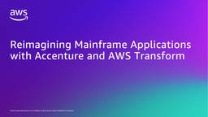

Migration & Modernization
フィード

Reimagining Mainframe Applications with Accenture and AWS Transform
Migration & Modernization
This post is co-written with Reshma Nuggehally, Jai Bagmar and Kanai Lal Dutta from Accenture Background: Organizations running mainframes face a critical challenge: 90% are pursuing cloud modernization, yet organizations have transitioned fewer than 20% of workloads. Rising operating costs, retiring talent, and rigid architectures demand a fundamentally different approach. In this post, we explore how […]
1日前

Building a Conversational Data Collection Agent on Amazon Quick
Migration & Modernization
Collecting structured data from dozens of distributed stakeholders (whether for cloud migration planning, compliance assessments, vendor onboarding, or security reviews) is a persistent bottleneck in enterprise workflows. Teams typically rely on emailed spreadsheets, which generate weeks of follow-ups, inconsistent responses, and manual reconciliation. This post shows how to build a conversational data collection agent on […]
10日前
Lessons from Production Migrations: Troubleshooting Complex Issues with AWS Transform MGN
Migration & Modernization
No matter how thorough your planning, large-scale migrations will surface edge cases that no runbook anticipates. The difference between a stalled project and a successful one often comes down to how quickly your team can diagnose, resolve the unexpected and whether those lessons feed back into your process. This post distills that operational knowledge into […]
15日前
AWS Transform for migrations now supports localization for 13 languages
Migration & Modernization
Organizations running migration projects don’t always operate in a single shared language. Migration teams span geographies, and the people closest to the workloads are often the ones who understand dependencies, business context, and operational risk. They need to work in the language they’re most comfortable with. Today, we’re announcing local language support for the AWS Transform migrations […]
15日前
Agile Migration Planning: Accelerate Wave Planning with AWS Transform
Migration & Modernization
Planning is a critical phase of any cloud migration. You invest significant time coordinating across stakeholders and mapping dependencies to build detailed wave plans. Yet despite this effort, many plans quickly diverge from reality as infrastructure changes, applications get updated, and business priorities shift. An inaccurate plan carries real risk: a migration wave can fail […]
17日前
Deploying VCF 9.1 on Amazon EVS with End-to-End Automation
Migration & Modernization
Introduction Amazon Elastic VMware Service (Amazon EVS) lets you run VMware Cloud Foundation (VCF) directly on AWS bare-metal EC2 instances within your Amazon VPC. With EVS, you get the operational consistency of the VMware stack you already know, combined with the elasticity, security, and breadth of AWS cloud services. VCF 9 is the latest release […]
18日前
Announcing support for VCF 9.0 and 9.1 on Amazon EVS
Migration & Modernization
We’re excited to share that VMware Cloud Foundation (VCF) 9.0 and 9.1 are now available on Amazon Elastic VMware Service (EVS), giving you complete control over your VCF installation. Our focus with Amazon EVS is to give you the flexibility to deploy and configure VCF to fit your needs, using the tools, operational processes, and […]
18日前
Agentic readiness and modernization analysis are now available in AWS Transform continuous modernization
Migration & Modernization
Earlier this year we introduced Agentic Readiness as a method for evaluating whether applications can safely support AI agent interaction, and then shipped Agentic Readiness Analysis (ARA) and Modernization Analysis (MODA) as managed transformation definitions in AWS Transform. Those analyses gave you per-repository and portfolio-level assessments you could run on demand via the ATX CLI. […]
24日前
AWS Transform: From migration to continuous modernization
Migration & Modernization
A month ago, I shared our learnings from AWS Transform’s first year—4.5 billion lines of code processed, 1.6 million hours saved for customers. We’ve continued to scale rapidly: now at 7 billion lines of code and an estimated 2 million hours saved. But it’s not just the numbers. I’m even more excited to share several […]
25日前
Reimagine mainframe applications with traceability and speed using AWS Transform
Migration & Modernization
Enterprises need their core systems to support business transformation and AI. When those systems are undocumented mainframe monoliths, they become the bottleneck. Reverse engineering a mainframe application, capturing its business intent, and translating that into modern code could take months or years for even a small set of business functionality. Many organizations settled for migration […]
1ヶ月前